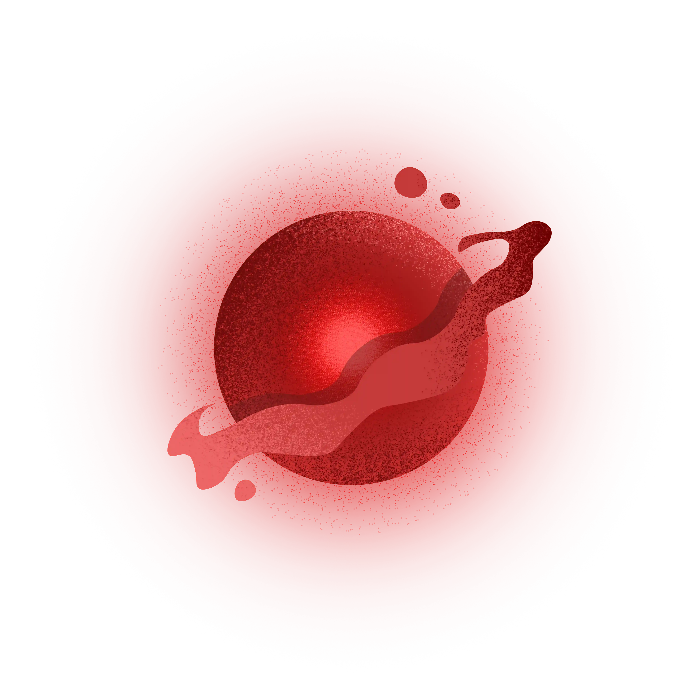
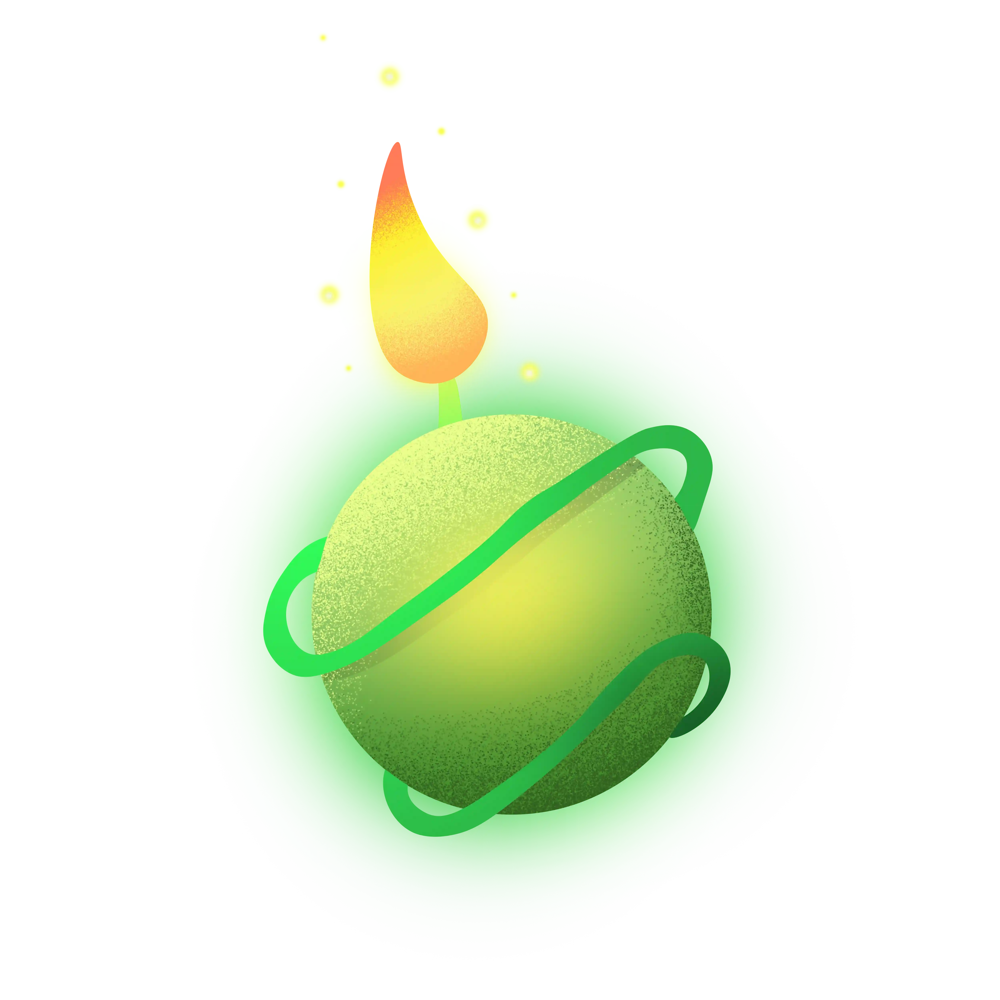
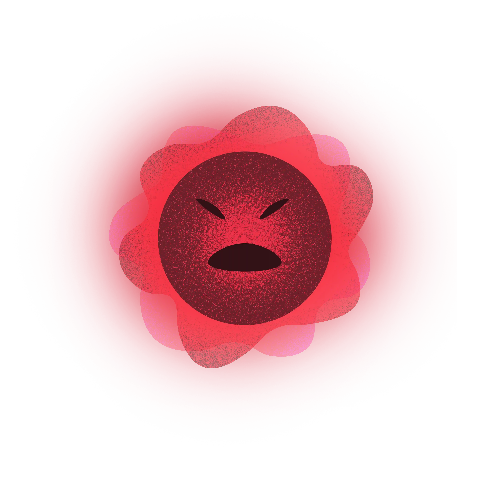
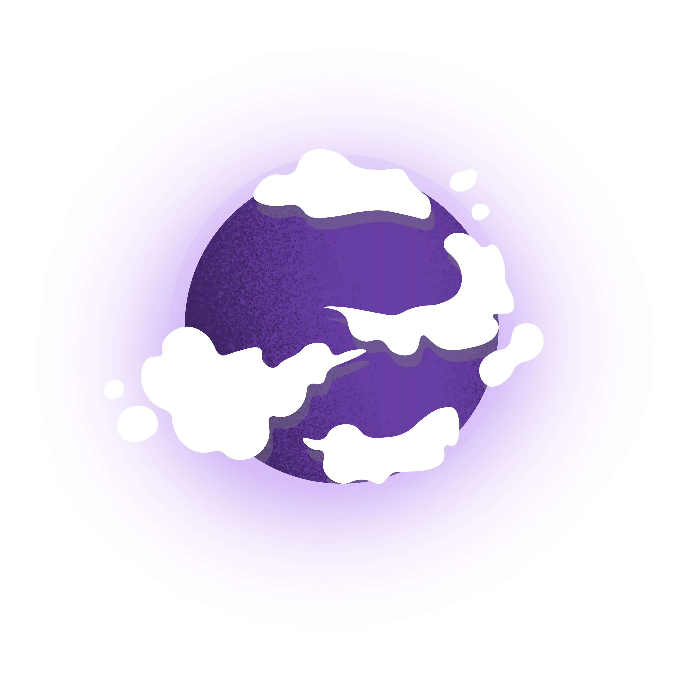

Blodmånen
Blodmånen markerer starten på Susis cyklus (dag 1–7). Her har hun menstruation og kan føle sig træt og følsom. Hjælp hende med at vælge det, der gør hende glad og komfortabel i denne fase!
Start
Hvad skal Susi have?
Fortsæt
Din browser understøtter ikke video.